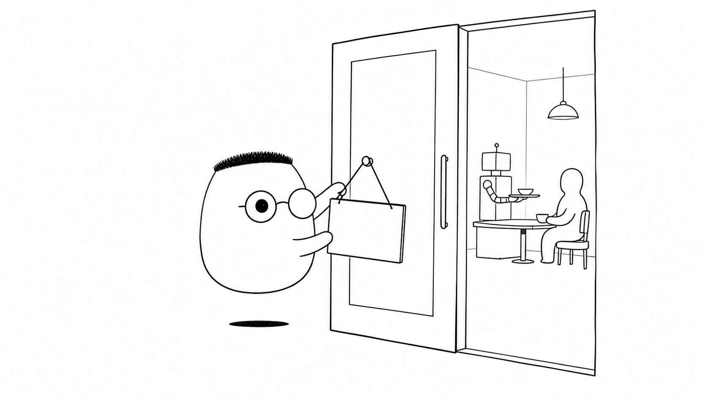
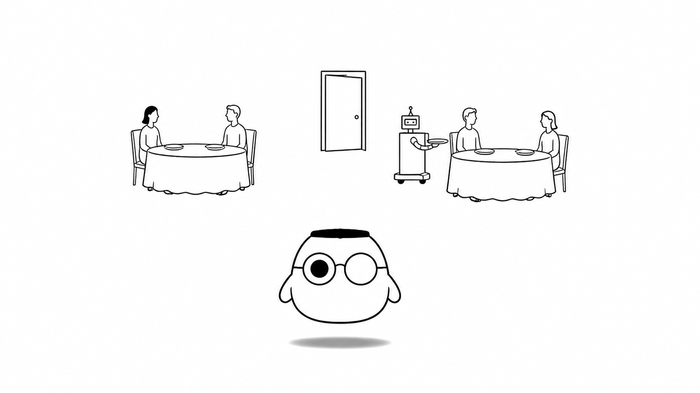
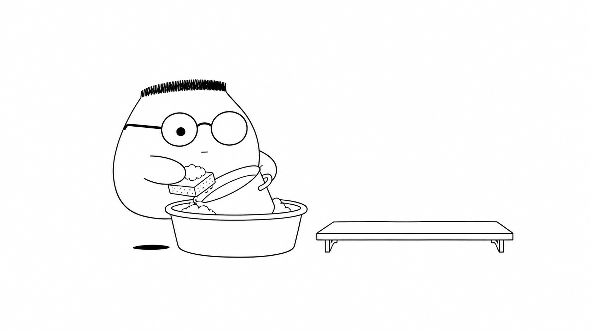

Masalah sehari-hari
Server kadang perlu berhenti untuk deployment, pindah mesin, atau perawatan. Saat itu, request mungkin masih berjalan. Jika server dimatikan mendadak, pekerjaan bisa terpotong dan hasilnya tidak jelas.
Analogi Kuka
Restoran memasang papan "tutup sebentar lagi" di pintu. Tamu baru tidak masuk. Tamu yang sudah duduk tetap menyelesaikan makanan dan membayar.
Setelah meja kosong, pelayan mencuci piring dan merapikan dapur. Baru kemudian lampu dimatikan dan pintu dikunci. Proses ini disebut connection draining.
Peta istilah restoran
Restoran adalah backend. Tamu lama adalah request yang sedang berjalan. Papan tutup menandai bahwa request baru tidak diterima. Meja yang dikosongkan menggambarkan connection draining. Panci, koneksi, dan file adalah resource yang harus dibereskan.
Ilustrasi

Papan di pintu memberi tanda yang jelas. Restoran tidak menerima pekerjaan baru, tetapi tetap menghormati pekerjaan yang sudah dimulai.
Penjelasan konsep
Graceful shutdown adalah urutan menutup server dengan aman. Server menerima tanda berhenti, menghentikan penerimaan request baru, menyelesaikan pekerjaan yang ada, lalu membersihkan resource.
Connection draining menjaga request yang sudah masuk agar punya kesempatan selesai. Server tidak menambah antrean baru. Ia menunggu koneksi yang masih aktif sampai selesai atau sampai batas waktu yang sudah ditentukan.

Siklus hidup proses
Proses punya awal, masa berjalan, dan akhir. Saat akhir dipersiapkan, aplikasi bisa menyelesaikan tugasnya lebih dulu. Urutan ini membuat perpindahan antar proses lebih mudah dikendalikan.
Signal
Signal adalah tanda dari sistem operasi atau proses lain. SIGTERM biasanya meminta aplikasi berhenti dengan sopan. SIGINT sering datang saat developer menekan Ctrl+C. SIGKILL memaksa proses berhenti dan tidak memberi waktu untuk cleanup.
Resource adalah sesuatu yang dipakai selama server berjalan. Contohnya koneksi database, koneksi jaringan, file handle, cache, dan file sementara. Semuanya perlu ditutup atau dilepaskan sebelum proses keluar.
Pembersihan resource
Server menutup koneksi database, menyelesaikan penulisan, menghapus file sementara, dan menghentikan pekerjaan latar belakang. Pembersihan mencegah resource tertinggal dan membantu proses berikutnya mulai dari keadaan yang rapi.

Shutdown yang baik tetap punya batas waktu. Jika request tidak selesai dalam batas itu, sistem dapat menghentikannya. Batas ini mencegah server menunggu tanpa akhir.
Diagram alur
Signal memulai urutan penutupan. Server berhenti menerima tamu baru, menunggu tamu lama selesai, lalu membersihkan resource sebelum pintu dikunci.
Contoh mini
1. Pasang papan tutup. 2. Tolak tamu baru. 3. Layani tamu lama. 4. Bersihkan resource. 5. Kunci pintu.
Kartu pos ini merangkum cara restoran menutup pintu. Backend mengikuti urutan yang sama agar pekerjaan yang sudah dimulai tidak hilang.
Ringkasan
- Graceful shutdown menutup server secara bertahap, bukan mendadak.
- Server berhenti menerima request baru sebelum proses selesai.
- Connection draining memberi waktu bagi request yang sedang berjalan untuk tuntas.
- Signal seperti SIGTERM dan SIGINT dapat memulai urutan penutupan.
- SIGKILL menghentikan proses tanpa memberi kesempatan cleanup.
- Resource seperti koneksi database, file handle, dan cache perlu dibereskan.
- Batas waktu mencegah shutdown menunggu tanpa akhir.
Pertanyaan pemahaman
- Apa beda matikan lampu langsung dengan tutup secara santun?
- Kenapa tamu baru ditolak lebih dulu sebelum tamu lama selesai dilayani?
- Apa yang harus dibersihkan sebelum pintu dikunci?
Mau lebih dalam
Versi teknis membahas implementasi graceful shutdown, penanganan signal, dan batas waktu dengan contoh yang dapat dijalankan.
Belum dibahas di sini
- Kode implementasi ada di versi teknis.
- Referensi lanjutan ada di versi teknis.